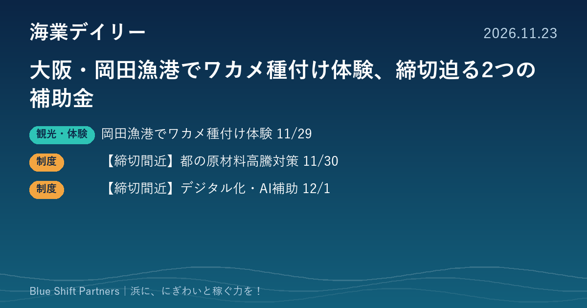

2026.11.23
大阪・岡田漁港でワカメ種付け体験、締切迫る2つの補助金

大阪府泉南市の岡田漁港で、11月29日にワカメの種付けとビーチクリーンの体験会が開かれます。東京都中小企業振興公社の原材料高騰対策の助成金（第3回）は11月30日、デジタル化・AI導入補助金の通常枠（7次）は12月1日が締切です。
大阪・岡田漁港で「ワカメの種付け＆ビーチクリーン体験」、11月29日に開催
大阪府は、11月29日（日）10時から12時まで、泉南市の岡田漁港（岡田浦漁業協同組合前）で「ワカメの種付け＆ビーチクリーン体験」が開かれると発表しました。参加者は養殖用のロープにワカメの種糸を取り付ける作業を体験し、泉南ロングパークの浜辺に漂着したプラスチックごみも拾います。定員は50名で事前申込の先着順、参加は無料です。主催は「大阪から明るい水産業を創る会」で、公益財団法人大阪府漁業振興基金が助成しています。
ここがポイント：養殖の作業を一般の人が手伝う形にした体験で、海の環境保全と漁業への理解を一度に伝えられる構成です。冬場の養殖の仕込みを体験の場に変える工夫は、ほかの浜でも参考になります。
出典：大阪府 報道発表「大阪府漁業振興基金が助成する11月のイベントを紹介します！「ワカメの種付け＆ビーチクリーン体験」が開催されます！」（2026-11-19）
【締切間近】東京都中小企業振興公社「中東情勢による原材料価格高騰に伴う経営基盤安定化緊急対策事業」第3回、11月30日16時まで
東京都中小企業振興公社は、中東情勢をきっかけとするコスト上昇で利益率の低下が見込まれる都内中小企業等に、原材料費の縮減などにつながる設備・システム導入の経費を助成しています。対象は、直近決算期の営業利益率が前期より減った、次期の営業利益率が減ると見込む、または直近決算期に営業損失を計上した都内中小企業等です。助成率は対象経費の5分の4以内、助成限度額は2,000万円です。第3回の申請期間は11月2日から11月30日（月）16時までで、Jグランツによる電子申請（gBizIDプライムが必要）で受け付けます。
ここがポイント：機械装置やシステムの導入、販路開拓の経費も対象に挙がっており、都内の水産加工・飲食の事業者が歩留まりを上げる設備や在庫管理の仕組みを入れる際に使えます。gBizIDプライムの発行には時間がかかるため、未取得の場合は今回は見送り、次の機会に備えることも選択肢です。
出典：東京都中小企業振興公社「中東情勢による原材料価格高騰に伴う経営基盤安定化緊急対策事業」（2026-11-23）
【締切間近】デジタル化・AI導入補助金2026 通常枠、7次締切は12月1日17時
中小企業・小規模事業者等がITツールを導入する経費の一部を補助する「デジタル化・AI導入補助金2026」の通常枠は、7次締切が12月1日（火）17時です。補助率は2分の1以内で、最低賃金に関する要件を満たす場合は3分の2以内となります。補助額は、1プロセス以上で5万円以上150万円未満、4プロセス以上で150万円以上450万円以下です。7次締切分の交付決定は2027年1月19日の予定とされています。
ここがポイント：販売管理・在庫・会計などのソフトウェアやクラウド利用料が対象で、直売所のPOSと在庫の連動、民宿の予約・宿泊管理、加工場の受発注管理などに充てられます。活用事例には宿泊業のクラウド型ホテル管理システムも挙がっています。
出典：デジタル化・AI導入補助金2026 公式サイト「通常枠」（2026-11-23）
冬場は、浜に人を呼ぶ工夫が問われる時期です。岡田漁港のように養殖の仕込みを体験に変える発想と、締切の迫る補助金で設備や仕組みを整える動きを組み合わせれば、春からの稼ぐ力の土台づくりにつながります。